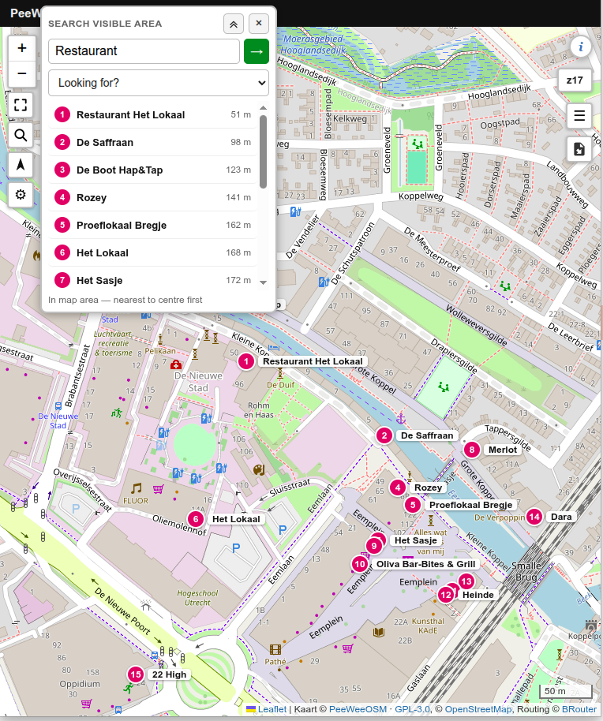
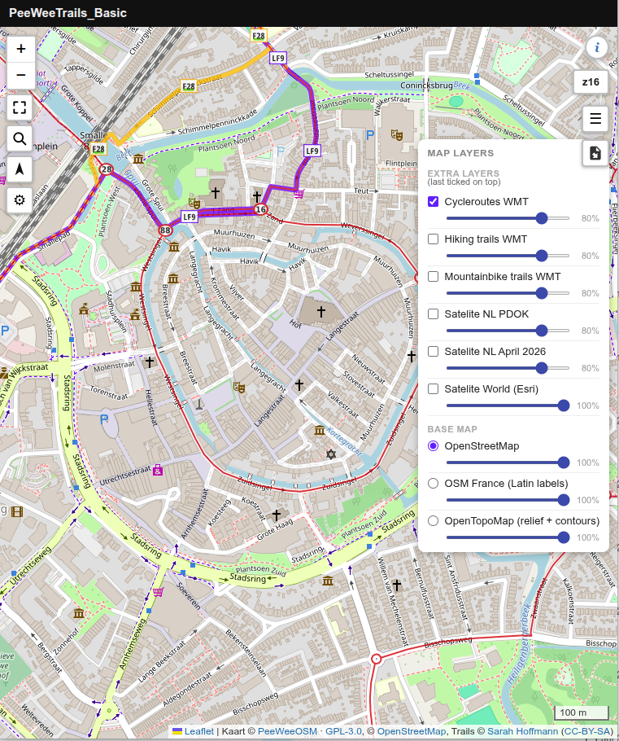
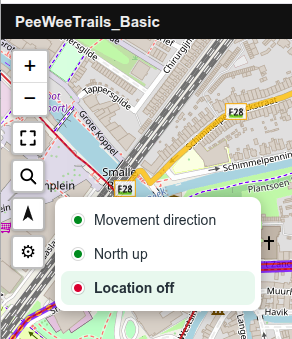
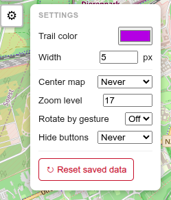
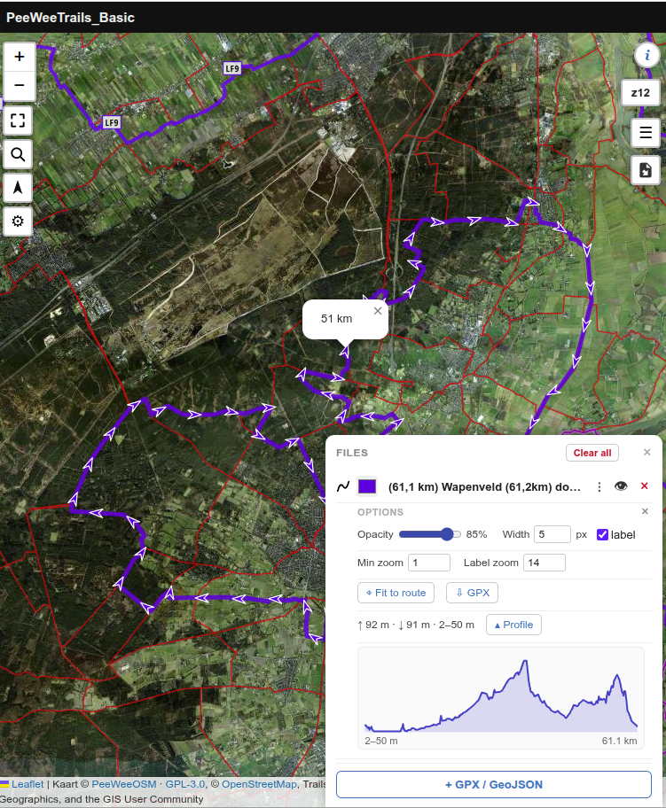
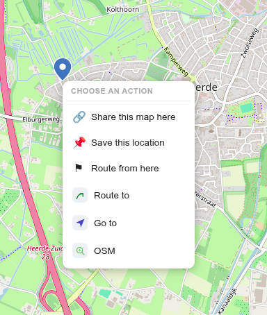
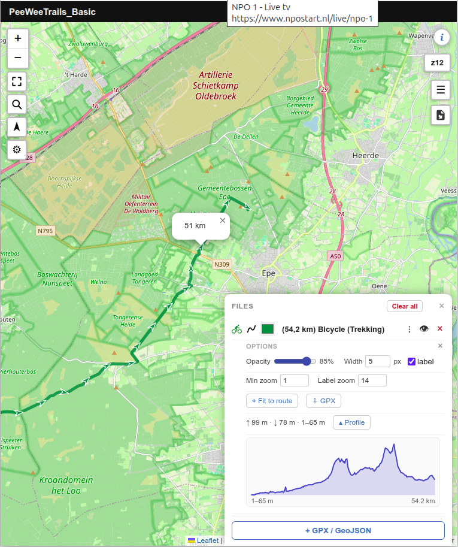
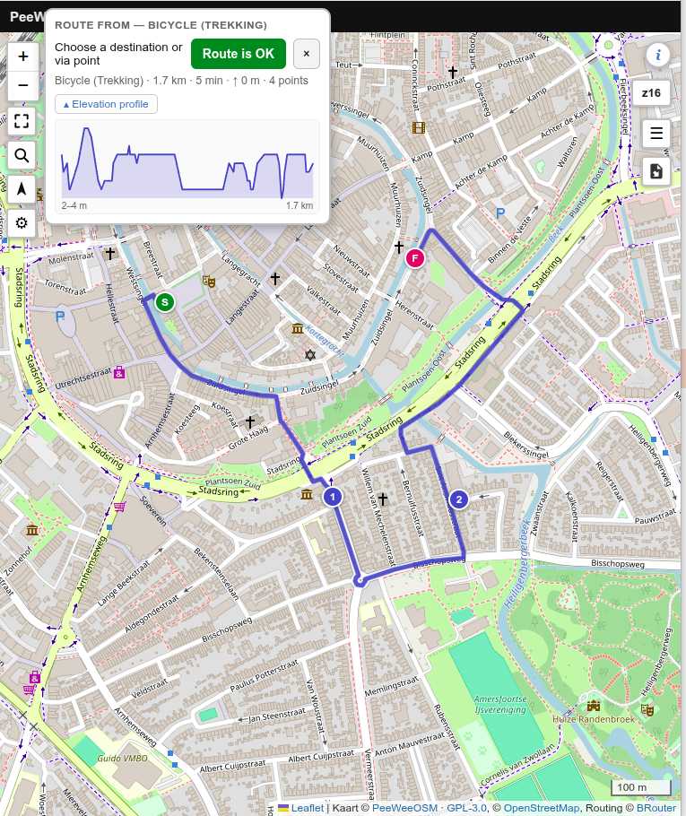

For cycling & walkingVoor fietsen & wandelenZum Radfahren & WandernPour le vélo & la marche
PeeWeeTrails Basic
A simple navigation app for recreational use that runs entirely in your browser.Een simpele navigatie-app voor recreatief gebruik die volledig in je browser draait.Eine einfache Navigations-App für die Freizeit, komplett im Browser.Une application de navigation simple pour les loisirs, entièrement dans votre navigateur.
PeeWeeTrails Basic is a simple, privacy-friendly navigation app based on OpenStreetMap, for cycling and walking for example. It just runs in your browser. It is always up to date, there is nothing to install and no account is needed. No cookies, no Google, no trackers or other privacy-unfriendly things. Search for a restaurant or campsite and navigate to it. Browse the (node-network) cycling and walking routes, build your own route, or import one of the many GPX routes available online. See on the map where you are and where you need to go. Made for a relaxed day out on the bike or on foot.
PeeWeeTrails Basic is een eenvoudige, privacyvriendelijke, op OpenStreetMap gebaseerde navigatie-app voor bijvoorbeeld fietsen en wandelen. Het werkt gewoon in je browser. Hij is altijd up-to-date, je hoeft niets te installeren en er is geen account nodig. Geen cookies, Google, trackers of andere privacy-onvriendelijke dingen. Zoek een restaurant of camping en navigeer ernaartoe. Bekijk de (knooppunt)fiets- en wandelroutes, maak je eigen route of importeer een van de vele online beschikbare gpx-routes. Zie op de kaart waar je bent en waar je naartoe moet. Gemaakt voor een ontspannen dagje fietsen of wandelen.
PeeWeeTrails Basic ist eine einfache, datenschutzfreundliche Navigations-App auf Basis von OpenStreetMap, zum Beispiel fürs Radfahren und Wandern. Sie läuft einfach im Browser. Sie ist immer aktuell, es gibt nichts zu installieren und kein Konto ist nötig. Keine Cookies, kein Google, keine Tracker oder andere datenschutzunfreundlichen Dinge. Suchen Sie ein Restaurant oder einen Campingplatz und navigieren Sie dorthin. Sehen Sie sich die (Knotenpunkt-)Rad- und Wanderrouten an, erstellen Sie eine eigene Route oder importieren Sie eine der vielen online verfügbaren GPX-Routen. Sehen Sie auf der Karte, wo Sie sind und wohin Sie müssen. Gemacht für einen entspannten Tag auf dem Rad oder zu Fuß.
PeeWeeTrails Basic est une application de navigation simple et respectueuse de la vie privée, basée sur OpenStreetMap, par exemple pour le vélo et la marche. Elle fonctionne simplement dans votre navigateur. Elle est toujours à jour, il n'y a rien à installer et aucun compte n'est nécessaire. Pas de cookies, pas de Google, pas de traqueurs ni d'autres éléments contraires à la vie privée. Cherchez un restaurant ou un camping et laissez-vous guider jusqu'à lui. Consultez les itinéraires vélo et marche (à points-nœuds), créez votre propre parcours ou importez l'une des nombreuses traces GPX disponibles en ligne. Voyez sur la carte où vous êtes et où aller. Pensé pour une sortie tranquille à vélo ou à pied.
The buttons at a glanceDe knoppen in één oogopslagDie Schaltflächen auf einen BlickLes boutons en un coup d'œil
What you can doWat je kunt doenWas Sie tun könnenCe que vous pouvez faire

1Tap the search button, type what you are looking for — a place name, "restaurant", "supermarket" — and the matches inside the current map view are numbered on the map and in the list.1Tik op de zoekknop, typ wat je zoekt — een plaatsnaam, "restaurant", "supermarkt" — en de treffers binnen het huidige kaartbeeld verschijnen genummerd op de kaart en in de lijst.1Tippen Sie auf die Suche, geben Sie ein, was Sie suchen — einen Ortsnamen, "Restaurant", "Supermarkt" — und die Treffer im aktuellen Kartenausschnitt erscheinen nummeriert auf der Karte und in der Liste.1Appuyez sur la loupe, saisissez ce que vous cherchez — un nom de lieu, « restaurant », « supermarché » — et les résultats visibles dans la carte sont numérotés sur la carte et dans la liste.

2The layers menu switches the base map (OpenStreetMap, OSM France, OpenTopoMap) and turns on extra overlays: signed cycle, hiking and mountain-bike routes, and Dutch or worldwide satellite imagery.2Het lagen-menu wisselt de basiskaart (OpenStreetMap, OSM France, OpenTopoMap) en zet extra overlays aan: bewegwijzerde fiets-, wandel- en mountainbikeroutes, en Nederlands of wereldwijd satellietbeeld.2Das Ebenen-Menü wechselt die Grundkarte (OpenStreetMap, OSM France, OpenTopoMap) und schaltet Zusatz-Overlays ein: ausgeschilderte Rad-, Wander- und Mountainbike-Routen sowie niederländische oder weltweite Satellitenbilder.2Le menu des couches change le fond de carte (OpenStreetMap, OSM France, OpenTopoMap) et active des surcouches : itinéraires cyclables, de randonnée et VTT balisés, et imagerie satellite néerlandaise ou mondiale.

3The location button offers three modes: Movement direction (the map turns with you as you ride or walk), North up, and Location off.3De locatieknop heeft drie standen: Bewegingsrichting (de kaart draait met je mee tijdens fietsen of wandelen), Noord boven, en Locatie uit.3Die Standort-Taste bietet drei Modi: Bewegungsrichtung (die Karte dreht sich beim Fahren oder Gehen mit), Norden oben und Standort aus.3Le bouton de position propose trois modes : Sens de déplacement (la carte tourne avec vous à vélo ou à pied), Nord en haut et Position désactivée.

4Settings let you pick the trail colour and width, when the map re-centres, the zoom level, whether two-finger rotation is on, and save the trail you followed as a GPX file.4Bij de instellingen kies je de trailkleur en -breedte, wanneer de kaart hercentreert, het zoomniveau, of draaien met twee vingers aanstaat, en bewaar je de gevolgde trail als GPX-bestand.4In den Einstellungen wählen Sie Farbe und Breite des Trails, wann die Karte neu zentriert, die Zoomstufe, ob die Zwei-Finger-Drehung aktiv ist, und speichern den gefahrenen Trail als GPX-Datei.4Les réglages permettent de choisir la couleur et l'épaisseur du tracé, le moment du recentrage, le niveau de zoom, l'activation de la rotation à deux doigts, et d'enregistrer la trace suivie au format GPX.

5Load your own GPX or GeoJSON and it appears on the map with an elevation profile and its own colour, width and label options.5Laad je eigen GPX of GeoJSON en die verschijnt op de kaart met een hoogteprofiel en eigen kleur-, breedte- en labelopties.5Laden Sie Ihre eigene GPX- oder GeoJSON-Datei — sie erscheint auf der Karte mit Höhenprofil und eigenen Farb-, Breiten- und Beschriftungsoptionen.5Importez votre propre GPX ou GeoJSON : il s'affiche sur la carte avec un profil altimétrique et ses propres options de couleur, d'épaisseur et d'étiquette.

6Press on the map for actions: share the location, save it, calculate a route from your location or plan a new route. Or jump to the location in another app.6Druk op de kaart voor acties: deel de locatie, sla 'm op, laat een route berekenen vanaf jouw locatie of plan een nieuwe route. Of spring naar de locatie in een andere app.6Tippen Sie auf die Karte für Aktionen: den Ort teilen, speichern, eine Route von Ihrem Standort berechnen oder eine neue Route planen. Oder zum Ort in einer anderen App springen.6Appuyez sur la carte pour agir : partager le lieu, l'enregistrer, calculer un itinéraire depuis votre position ou planifier un nouveau parcours. Ou ouvrir le lieu dans une autre application.

7Route to calculates a route from your current location to the point you picked, using BRouter — on foot, by bike or by car.7Route naar berekent een route van je huidige locatie naar het gekozen punt, met BRouter — te voet, fiets of auto.7Route hierher berechnet mit BRouter eine Route von Ihrem aktuellen Standort zum gewählten Punkt — zu Fuß, per Rad oder Auto.7Itinéraire vers calcule, avec BRouter, un trajet de votre position au point choisi — à pied, à vélo ou en voiture.

8Route from here lets you build a route by adding via-points; the length, time and elevation profile update live as you go.8Route vanaf hier laat je een route bouwen door via-punten toe te voegen; lengte, tijd en hoogteprofiel werken live bij terwijl je bezig bent.8Route von hier lässt Sie eine Route über Zwischenpunkte aufbauen; Länge, Zeit und Höhenprofil aktualisieren sich live.8Itinéraire depuis ici permet de construire un parcours en ajoutant des points de passage ; la distance, la durée et le profil altimétrique se mettent à jour en direct.
Good to know: it mostly needs to be onlineGoed om te weten: meestal is internet nodigGut zu wissen: meist ist Internet nötigBon à savoir : une connexion est le plus souvent nécessaire
The map tiles, routing, search and satellite imagery are all fetched live from the internet, so most of the app needs a connection. Your own imported files and following your GPS position keep working offline — but the map itself will not load without internet.
De kaarttegels, routing, zoeken en satellietbeeld worden allemaal live van internet gehaald, dus het meeste heeft verbinding nodig. Je eigen geïmporteerde bestanden en het volgen van je GPS-positie blijven offline werken — maar de kaart zelf laadt niet zonder internet.
Kartenkacheln, Routing, Suche und Satellitenbilder werden live aus dem Internet geladen, daher braucht das Meiste eine Verbindung. Ihre importierten Dateien und das Verfolgen der GPS-Position funktionieren offline weiter — die Karte selbst lädt aber nicht ohne Internet.
Les tuiles de carte, le calcul d'itinéraire, la recherche et l'imagerie satellite sont récupérés en direct sur internet : l'essentiel nécessite donc une connexion. Vos fichiers importés et le suivi de votre position GPS continuent hors ligne — mais la carte elle-même ne se charge pas sans internet.
Built on the best of OpenStreetMapGebouwd op het beste van OpenStreetMapAus dem Besten von OpenStreetMapBâti sur le meilleur d'OpenStreetMap
Rather than reinventing anything, this map combines some of the best that the OpenStreetMap world has to offer — the familiar Carto map style, BRouter for route calculation, Waymarked Trails for signed cycle and hiking route overlays, and Nominatim for finding benches, places, restaurants, supermarkets and so on.
In plaats van zelf iets uit te vinden, combineert deze kaart het beste dat de OpenStreetMap-wereld te bieden heeft — het vertrouwde Carto-kaartbeeld, BRouter voor routeberekening, Waymarked Trails voor bewegwijzerde fiets- en wandelroutes, en Nominatim voor het zoeken naar bankjes, plaatsen, restaurants, supermarkten enzovoort.
Statt das Rad neu zu erfinden, verbindet diese Karte das Beste aus der OpenStreetMap-Welt — den vertrauten Carto-Kartenstil, BRouter für die Routenberechnung, Waymarked Trails für ausgeschilderte Rad- und Wanderrouten und Nominatim für die Suche nach Bänken, Orten, Restaurants, Supermärkten und so weiter.
Plutôt que de tout réinventer, cette carte réunit le meilleur du monde OpenStreetMap — le style cartographique Carto bien connu, BRouter pour le calcul d'itinéraire, Waymarked Trails pour les tracés cyclables et de randonnée balisés, et Nominatim pour rechercher des bancs, des lieux, des restaurants, des supermarchés, etc.
CartoBRouterWaymarked TrailsNominatim
More paths than the big mapsMeer paadjes dan de grote kaartenMehr Wege als die großen KartenPlus de chemins que les grandes cartes
OpenStreetMap knows far more small footpaths, cycle paths and signed cycle routes than the big commercial maps such as Google — including complete node ("knooppunt") networks for cycling and walking. For a recreational day out, that richness is exactly the point.
OpenStreetMap kent veel meer kleine wandelpaadjes, fietspaden en bewegwijzerde fietsroutes dan de grote commerciële kaarten zoals Google — inclusief complete knooppuntnetwerken voor fietsen en wandelen. Voor een recreatief dagje uit is juist die rijkdom het punt.
OpenStreetMap kennt weit mehr kleine Fußwege, Radwege und ausgeschilderte Radrouten als große kommerzielle Karten wie Google — inklusive kompletter Knotenpunkt-Netze fürs Rad und zu Fuß. Für einen Ausflug in der Freizeit ist genau dieser Reichtum entscheidend.
OpenStreetMap connaît bien plus de petits sentiers, pistes cyclables et itinéraires cyclables balisés que les grandes cartes commerciales comme Google — y compris des réseaux complets de points-nœuds pour le vélo et la marche. Pour une sortie de loisir, c'est précisément cette richesse qui compte.
Worldwide satellite tooOok wereldwijd satellietbeeldAuch weltweite SatellitenbilderSatellite mondial aussi
Next to the Dutch high-resolution aerial imagery there is a worldwide satellite layer, one tap away.Naast het Nederlandse hoge-resolutie luchtbeeld is er een wereldwijde satellietlaag, met één tik aan te zetten.Neben den hochauflösenden niederländischen Luftbildern gibt es eine weltweite Satellitenebene — nur einen Tipp entfernt.À côté de l'imagerie aérienne néerlandaise haute résolution, une couche satellite mondiale s'active d'un simple appui.
Nothing follows youNiets volgt jeNichts verfolgt SieRien ne vous suit
No trackers, no cookies, no ads and no account. Nothing leaves your device except the map, routing and search requests you trigger yourself.Geen trackers, geen cookies, geen advertenties en geen account. Niets verlaat je apparaat behalve de kaart-, routing- en zoekverzoeken die je zelf doet.Keine Tracker, keine Cookies, keine Werbung, kein Konto. Nichts verlässt Ihr Gerät außer den Karten-, Routing- und Suchanfragen, die Sie selbst auslösen.Pas de traqueurs, pas de cookies, pas de publicité, pas de compte. Rien ne quitte votre appareil, hormis les requêtes de carte, d'itinéraire et de recherche que vous lancez vous-même.
Add it to your home screenZet 'm op je startschermAuf den Startbildschirm legenAjoutez-la à votre écran d'accueil
Want it to open like an app? Most phones can pin the page to your home screen with its own icon. In Chrome or Brave on Android, open the browser menu (⋮) and choose "Add to Home screen" (or "Install app"). On an iPhone, tap the Share button in Safari and choose "Add to Home Screen". It still runs in the browser and still needs internet, but it opens straight from an icon and uses the full screen.
Wil je 'm als een app openen? De meeste telefoons kunnen de pagina met een eigen icoontje op je startscherm zetten. In Chrome of Brave op Android open je het browsermenu (⋮) en kies je "Toevoegen aan startscherm" (of "App installeren"). Op een iPhone tik je in Safari op de deelknop en kies je "Zet op beginscherm". Het blijft in de browser draaien en heeft nog steeds internet nodig, maar het opent meteen vanaf een icoontje en gebruikt het volledige scherm.
Möchten Sie es wie eine App öffnen? Die meisten Handys können die Seite mit einem eigenen Symbol auf den Startbildschirm legen. In Chrome oder Brave unter Android öffnen Sie das Browser-Menü (⋮) und wählen "Zum Startbildschirm hinzufügen" (oder "App installieren"). Auf einem iPhone tippen Sie in Safari auf "Teilen" und wählen "Zum Home-Bildschirm". Es läuft weiterhin im Browser und braucht weiterhin Internet, öffnet aber direkt über ein Symbol und nutzt den ganzen Bildschirm.
Envie de l'ouvrir comme une application ? La plupart des téléphones peuvent épingler la page sur l'écran d'accueil avec sa propre icône. Sur Android (Chrome ou Brave), ouvrez le menu du navigateur (⋮) et choisissez « Ajouter à l'écran d'accueil » (ou « Installer l'application »). Sur iPhone, appuyez sur le bouton Partager dans Safari et choisissez « Sur l'écran d'accueil ». Cela reste dans le navigateur et nécessite toujours internet, mais s'ouvre directement depuis une icône et utilise tout l'écran.